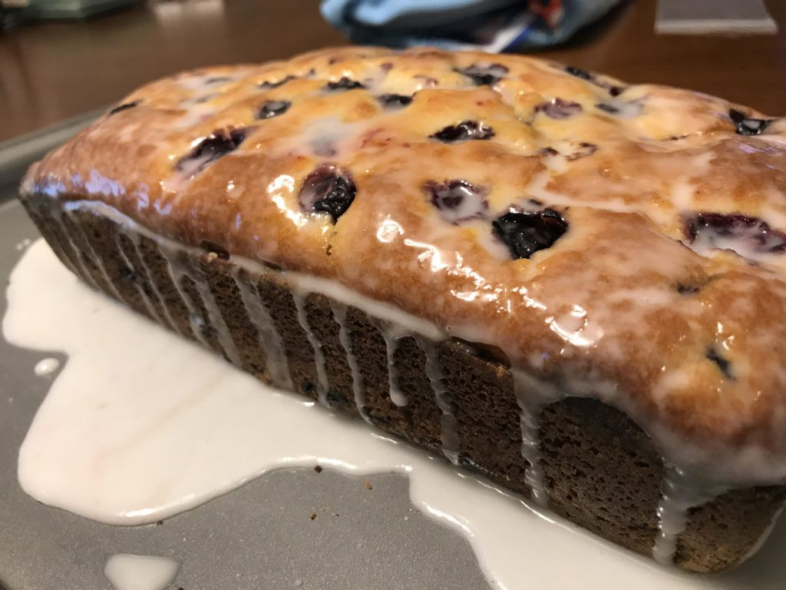

bilbo's tea cake

For when a random stranger shows up at your door...
this cake is tasty and sweet. Perfect for a shire-style tea party, or a simple breakfast with your family
Ingredients
- zest of one lemon
- 3/4 c. butter
- 1 c. sugar
- 4 eggs
- 2 1/4 c. flour (any soft flour will do)
- 1 tsp. baking powder
- 1 tsp. salt
- 1/2 c. dried cranberries
- juice of one lemon
Steps
- Cream together butter, sugar and zest.
- Stir together dry ingredients in a separate bowl.
- Add the eggs to the butter mixture one at a time, beating well after each.
- Add dry ingredients and lemon(or orange...) juice and mix Just Until Combined.
- Spoon into greased loaf pan and bake at 350 degrees for 30-45 min. or until golden.
- Wrap and store overnight before serving to Gandalf for Afternoon Tea.
note:
To impress the Wizard (and the Dwarves...), glaze with a mixture of half a lemon(not orange) and 1/2 c. of icing sugar
Pour over the loaf before hiding in the refrigerator overnight. Perfect for unexpected parties.